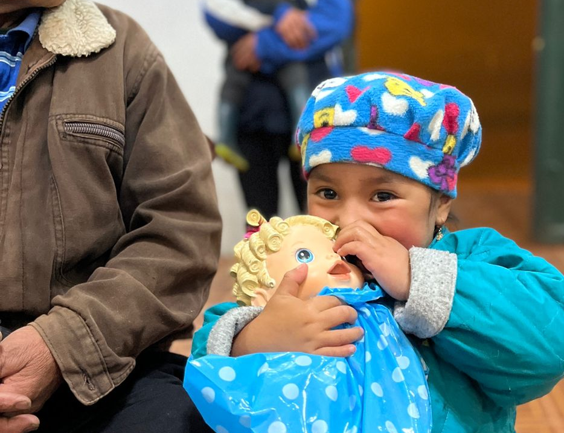

Misioneros al servicio del encuentro
Somos una organización de laicos católicos al servicio de la Iglesia local.
Creemos que la misión es el lugar donde misioneros y comunidades se descubren hermanos, y donde el Evangelio se vive en los encuentros de la vida cotidiana.
Seis formas de tender puentes
En cada misión caminamos junto a las comunidades: anunciamos la Buena Noticia, construimos espacios de encuentro y llevamos salud a quienes más lo necesitan.

Cada número es un encuentro real
atendidos
movilizados
atendidos
Detrás de cada cifra hay una comunidad que dejó de estar sola. Tu aporte hace posible el próximo encuentro.
Dona aquíHay un lugar para ti en la misión
No importa cuánto tiempo tengas ni tu oficio: cada don suma. Elige cómo quieres tender puentes.
Misionero
Únete a un grupo misionero y vive una misión en territorio: evangeliza, construye y sirve junto a la comunidad.
Voluntario profesional
Aporta tu oficio —médico, constructor, docente, comunicador— en las brigadas y proyectos donde más se necesita.
Oración y aporte
Acompaña la misión desde donde estés: con tu oración constante y con tu aporte económico para sostener cada proyecto.

Cada donación es un encuentro
Detrás de cada sonrisa hay alguien que decidió tender puentes. Hoy puedes ser tú. Tu aporte lleva esperanza a las comunidades más vulnerables del Ecuador.
Donar ahora →Coordinamos tu donación de forma segura.